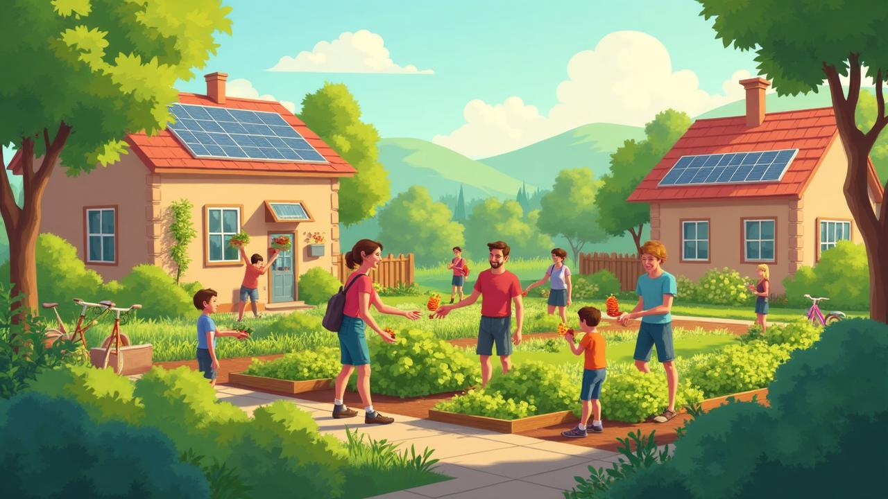
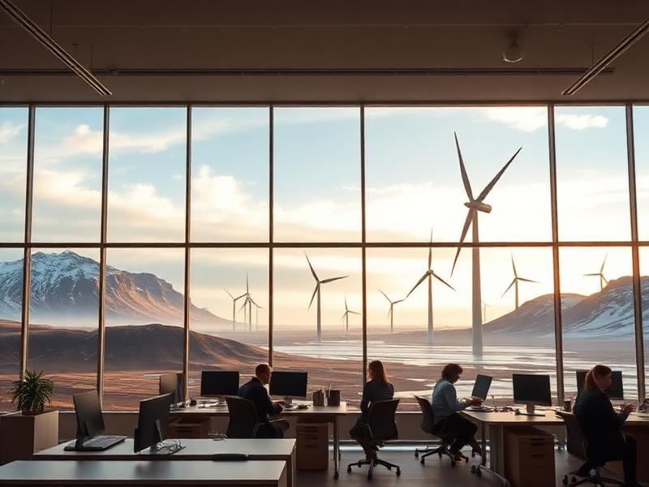
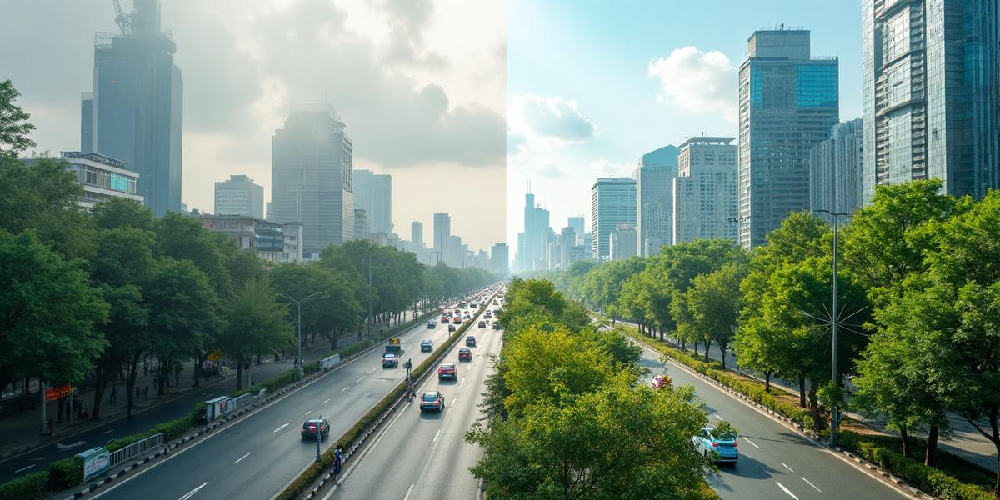

Explore how prioritizing sustainability, community, and quality of life over endless economic expansion could transform our world—with real examples and research-backed insights.

Explore how different aspects of life would change in a post-growth society
40-50+ hours per week, increasing overtime culture, high stress, burnout epidemic, competitive work environment.
Isolated individuals, competitive culture, less family time, weakened social bonds, consumer-driven relationships.
Rapid resource depletion, pollution, climate crisis, biodiversity loss, unsustainable consumption patterns.
25-32 hours per week, mandatory rest periods, reduced stress, focus on mental wellness, work-life balance prioritized.
Strong communities, cooperation culture, shared resources, family focus, meaningful relationships, collective well-being.
Regenerative practices, circular economy, restored ecosystems, carbon neutrality, sustainable living standards.
Countries and organizations already implementing post-growth principles with measurable results

Period: 2015-2022
Participants: 51% of workforce (35,000+ workers)
Iceland's experiment proves that reducing work hours doesn't harm the economy. Their GDP growth outperformed most European countries while dramatically improving quality of life.
Research shows significant improvements across multiple indicators in post-growth economies
Reduction in CO2 emissions
Decrease in water consumption
Improvement in air purity
Less waste through circular economy
Reduced stress and anxiety
Stronger community bonds
* Data synthesized from research on degrowth economies, circular economy studies, and real-world examples like Iceland's 4-day work week implementation.
How different aspects of daily life would change in a post-growth society
Current: 8-hour days, 5 days/week, commute stress, limited vacation, performance pressure
Post-Growth: 6-hour days, 4 days/week, flexible remote work, sabbaticals, collaborative goals
Current: Fast fashion, planned obsolescence, impulse buying, debt culture, disposal mindset
Post-Growth: Repair cafes, sharing economy, quality over quantity, circular design, collaborative consumption
Current: Individual ownership focus, suburban sprawl, isolation, housing as investment
Post-Growth: Co-housing communities, shared spaces, walkable neighborhoods, housing as human right
Current: Competition-based, standardized testing, career preparation focus, student debt
Post-Growth: Collaborative learning, life skills focus, creativity emphasis, free education
The dramatic environmental benefits of choosing wellbeing over endless growth

The evidence shows that prioritizing wellbeing over endless growth isn't just possible—it's already happening and working.
Post-growth economics offers a vision of society where human flourishing and environmental restoration take priority over GDP growth. The transition is challenging but achievable, as real-world examples demonstrate.